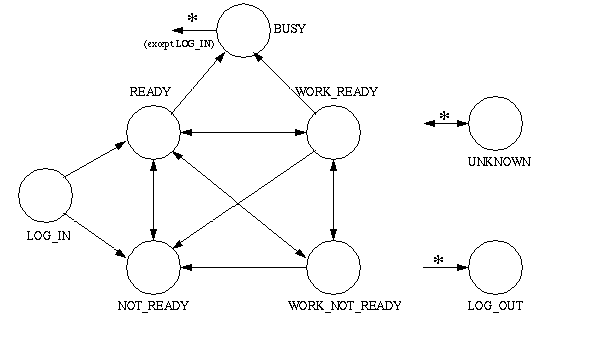

public interface Agent
Agent represents an individual capable of handling telephone
calls for a particular Address. For example, an agent may be a customer
service representative in a call center environment.
An Agent is associated with a particular AgentTerminal, which
represents the particular Terminal endpoint associated with the Agent. Each
Agent is also logged into a particular ACDAddress.
The act of logging into an address announces the availability of the Agent
to handle Calls which come into that ACDAddress. Distinct
Agents are used to represent the same individual who is logged into multiple
ACDAddresses from the same AgentTerminal
ACDAddress via the
AgentTerminal.addAgent() method. This method creates a new
Agent associated with the AgentTerminal and the
ACDAddress given as an argument.
Agents are removed from an AgentTerminal via the
AgentTerminal.removeAgent() method. This method also removes
the Agent from its ACDAddress. The Agent is no longer available
to receive telephone calls coming into its ACDAddress.
ACDAddress or its current ability to handle telephone calls.
Applications obtain the state of the Agent via the
Agent.getState() method. Applications may also directly change
the state of the Agent via the Agent.setState() method. Each
state is an integer constant defined in this interface and summarized below.
Agent.LOG_IN |
This state indicates the Agent is logged into an ACDAddress.
|
Agent.LOG_OUT |
This state indicates the Agent has logged out of an ACDAddress.
|
Agent.NOT_READY |
This state indicates the Agent is not available to handle Calls because it is busy with other non-call servicing related tasks. |
Agent.READY |
This state indicates the Agent is available to service Calls. |
Agent.WORK_NOT_READY |
This state indicates the Agent is not available to service Calls because it is busy with other call-servicing related tasks. |
Agent.WORK_READY |
This state indicates the Agent is available to service Calls and is also performing other call-servicing related tasks. |
Agent.BUSY |
This state indicates the Agent is not available to service Calls because it is busy with another Call. |
Agent.UNKNOWN |
This state indicates the state of the Agent is currently not known. |
The following diagram illustrates the valid state transitions for the
Agent. The implementation must guarantee the Agent state
adheres to these state transitions. If an applications requests an Agent
state change which violates the transitions, the setState()
method on this interface will throw InvalidStateException.
The state of this object can be altered by invoking the the setState method.

ACDAddressObserver for the
ACDAddress associated with this Agent, and
AgentTerminalObserver for the AgentTerminal
associated with this Agent. Both of these interfaces receive Agent state
events.
AgentTerminal,
ACDAddress,
AgentTerminalObserver,
ACDAddressObserver| Modifier and Type | Field and Description |
|---|---|
static int |
BUSY
The
Agent.BUSY state indicates the Agent is not available
to service Calls because it is busy with another Call. |
static int |
LOG_IN
The
Agent.LOG_IN state indicates that an Agent, which is
associated with an AgentTerminal is logged into an
ACDAddress. |
static int |
LOG_OUT
The
Agent.LOG_OUT state indicates the Agent has logged out of
an ACDAddress. |
static int |
NOT_READY
The
Agent.NOT_READY state indicates the Agent is not
available to handle Calls because it is busy with other non-call servicing
related tasks. |
static int |
READY
The
Agent.READY state indicates the Agent is available to
service Calls. |
static int |
UNKNOWN
The
Agent.UNKNOWN state indicates the state of the Agent is
currently not known. |
static int |
WORK_NOT_READY
The
Agent.WORK_NOT_READY state indicates the Agent is not
available to service Calls because it is busy with other call-servicing
related tasks. |
static int |
WORK_READY
The
Agent.WORK_READY state indicates the Agent is available
to service Calls and is also performing other call-servicing related
tasks. |
| Modifier and Type | Method and Description |
|---|---|
ACDAddress |
getACDAddress()
Returns the
ACDAddress which this Agent is logged into. |
Address |
getAgentAddress()
Returns the Address associated with the
AgentTerminal from
which this Agent is logged in. |
java.lang.String |
getAgentID()
Returns the Agent's string identification.
|
AgentTerminal |
getAgentTerminal()
Returns the
AgentTerminal associated with this Agent and
which this Agent is logged into. |
int |
getState()
Returns the current Agent state.
|
void |
setState(int state)
Changes the state of the Agent.
|
static final int UNKNOWN
Agent.UNKNOWN state indicates the state of the Agent is
currently not known.static final int LOG_IN
Agent.LOG_IN state indicates that an Agent, which is
associated with an AgentTerminal is logged into an
ACDAddress.static final int LOG_OUT
Agent.LOG_OUT state indicates the Agent has logged out of
an ACDAddress.static final int NOT_READY
Agent.NOT_READY state indicates the Agent is not
available to handle Calls because it is busy with other non-call servicing
related tasks.static final int READY
Agent.READY state indicates the Agent is available to
service Calls.static final int WORK_NOT_READY
Agent.WORK_NOT_READY state indicates the Agent is not
available to service Calls because it is busy with other call-servicing
related tasks.static final int WORK_READY
Agent.WORK_READY state indicates the Agent is available
to service Calls and is also performing other call-servicing related
tasks.static final int BUSY
Agent.BUSY state indicates the Agent is not available
to service Calls because it is busy with another Call.void setState(int state)
throws InvalidArgumentException,
InvalidStateException
InvalidStateException.
Pre-Conditions
state - The new, desired state of the Agent.InvalidArgumentException - The state given as the argument is
not a valid Agent state.InvalidStateException - Either the provider is not in service
or the Agent is not in a state in which the requested state change can
be honored.int getState()
java.lang.String getAgentID()
AgentTerminal.addAgent() method.
ACDAddress getACDAddress()
ACDAddress which this Agent is logged into.
Address getAgentAddress()
AgentTerminal from
which this Agent is logged in.
TsapiPlatformException - Implementation specific exception thrown if an address
cannot be located.AgentTerminal getAgentTerminal()
AgentTerminal associated with this Agent and
which this Agent is logged into. If the state of the Agent is
Agent.LOG_OUT, this method returns null.
TsapiPlatformException - Implementation specific exception thrown if a terminal
cannot be located.Copyright © 2009 Avaya All Rights Reserved.